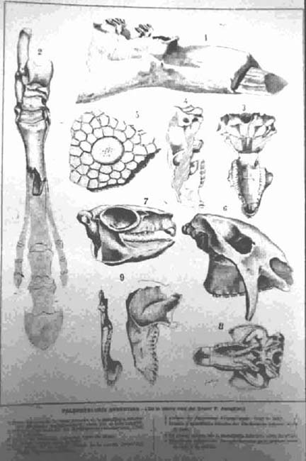

|
|  |
|
Florentino Ameghino, Paleontología argentina (illustration)
|
In Argentina, meanwhile, the discovery of fossil banks in the newly conquered regions of Patagonia were duly exploited by the Museo de La Plata´s director Francisco P. Moreno, who urged his deputy Florentino Ameghino, sent to explore the sites while the museum was still under construction, to bring back suitably large pieces in order to impress state officials and convince them to raise funding. Ameghino, who was more interested in systematic investigation of the evolution of local species, soon fell out with Moreno and his emphasis on a civic pedagogy through the monumental, dramatic arrangement of bewildering mounted skeletons. However, his mise-en-scène neither failed to impress the British palaeontologist Richard Lydekker, who submitted an enthusiastic review of the museum to the journal Natural Science (1894): "Before setting out on my recent visit to La Plata, I had been prepared by the glowing accounts sent to me by the Director, as well as by the published writings of other palaeontologists, to find the Museum exceedingly rich in the fossil Vertebrates of Argentina; but on my arrival the reality far exceeded my most eager expectations, and during my first walk through the seemingly endless galleries of the Museum I was absolutely lost in astonishment and admiration at the number and beauty of its palaeontological treasures..."
|